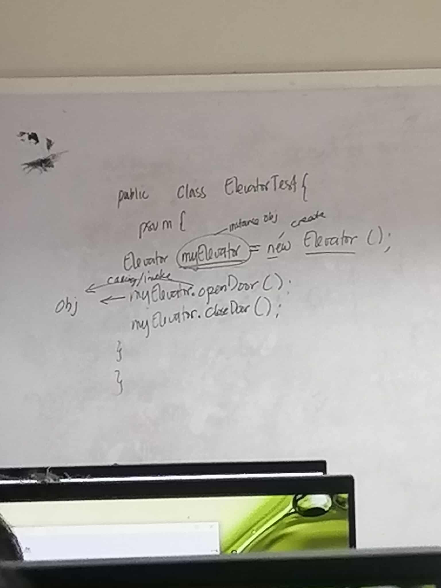
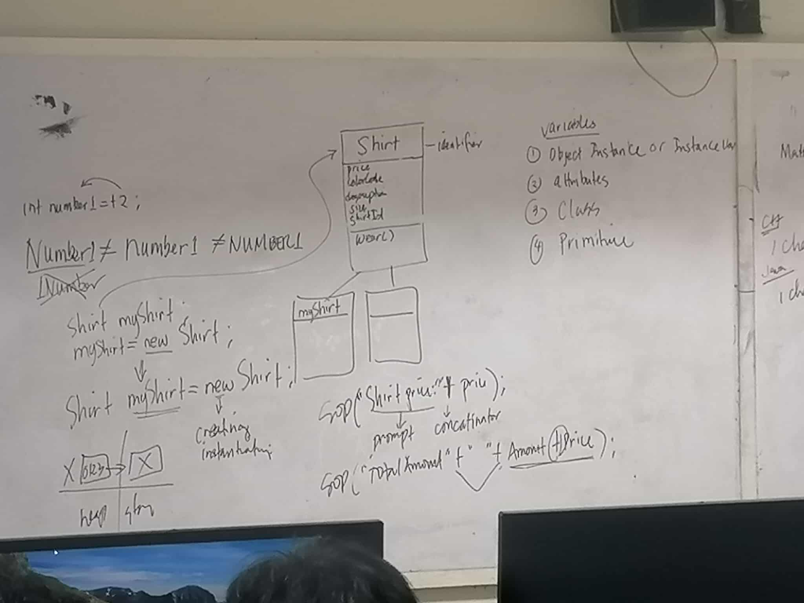
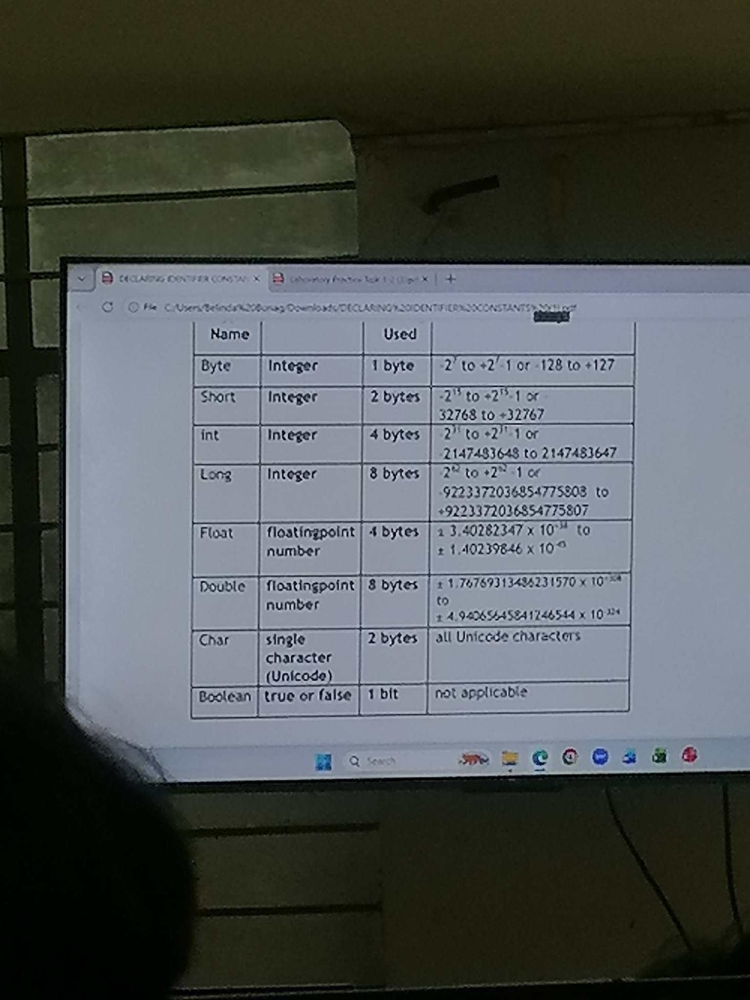
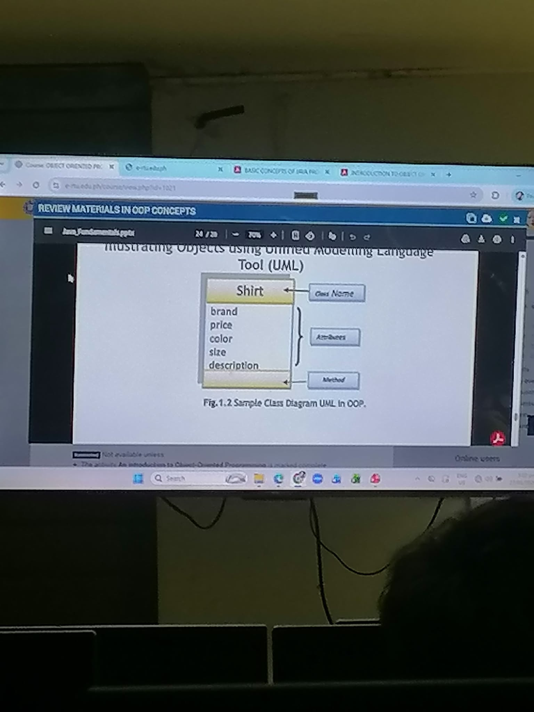

Welcome to my
E-Portfolio.
A curated Pokédex of my academic engineering work, tracking my progress in capturing the fundamentals of Java and Object-Oriented Programming.
My OOP Journey
This semester, using TextPad 8, I experimented heavily with the core techniques of Object-Oriented Programming in Java. Rather than just writing basic top-to-bottom instructions, I learned how to model concepts into structured, reusable code.
By programming practical exercises—like the Elevator simulation and Order forms—I was able to clearly see how classes, objects, inheritance, and polymorphism bind data and behavior together. These hands-on experiments have shifted my approach to logical problem-solving and given me a solid foundation for my future Computer Engineering studies.
Training Grounds (IRL)
Real-life snapshots of laboratory activities, engineering discussions, and peer collaboration.

Whiteboard session demonstrating how to instantiate the Elevator class and invoke its methods.

Mapping out the Shirt class UML diagram and discussing object instantiation syntax.

Classroom lecture covering Java primitive data types, their memory sizes, and value ranges.

Reviewing the anatomy of a UML Class Diagram, breaking down class names, attributes, and methods.